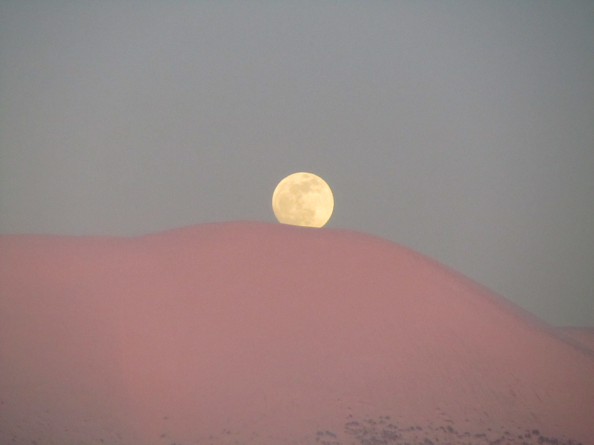

FEATURED
کوهستان؛ مکانی برای
کوهستان؛ مکانی برای
تماشا و مکاشفه
روایتی از سفرها، ارتفاع و سکوتِ طبیعت
در باد روان شدم. چه شوری برای تماشا داشتم. وقتی از هیاهوی بخشها و کشیکهای بیمارستان فاصله میگیری و به دامنه کوهستان پناه میبری، دوربین تبدیل به چشمی میشود که لحظههای تکرارنشدنیِ زیستن را برای ابدیت منجمد میکند.
بازگشت به طبیعت؛
غروب، مرگِ آفتاب نیست
طبیعت آرامش میبخشد و معنا را به یاد میآورد
اگر یک روز طلوع و غروب آفتاب را نمیدیدم گناهکار بودم. هر قابِ غروب و طلوع ماه، یادآوریِ این حقیقت است که در پسِ هر تاریکی، نوری در انتظار دیده شدن است؛ کافی است دریچهی لنز و نگاهمان را به روی جهان باز نگه داریم.
مطالعه روایتِ قاب
DARKROOM ARCHIVE
گزیده قابهای ثبتشده